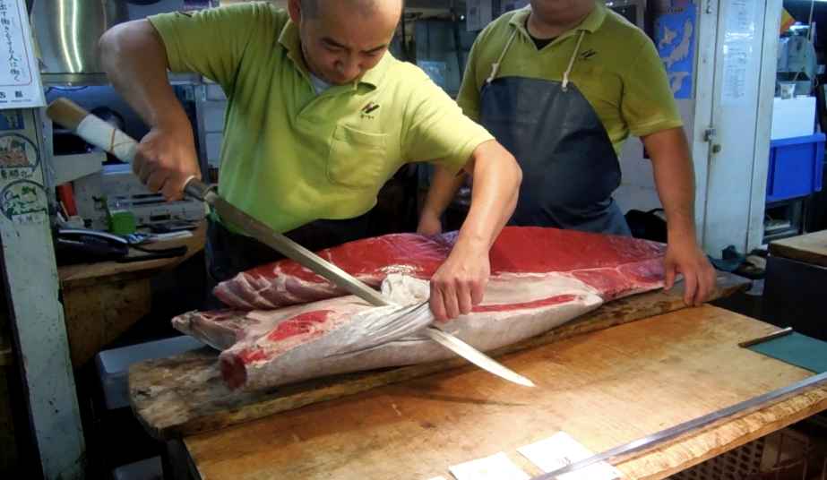
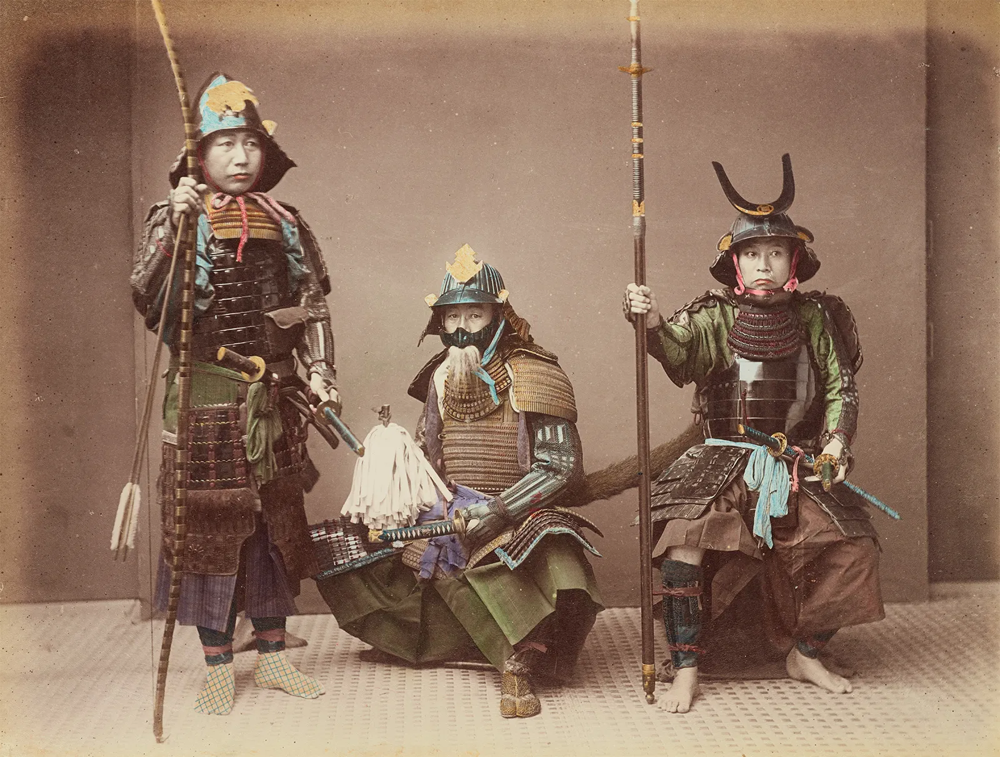
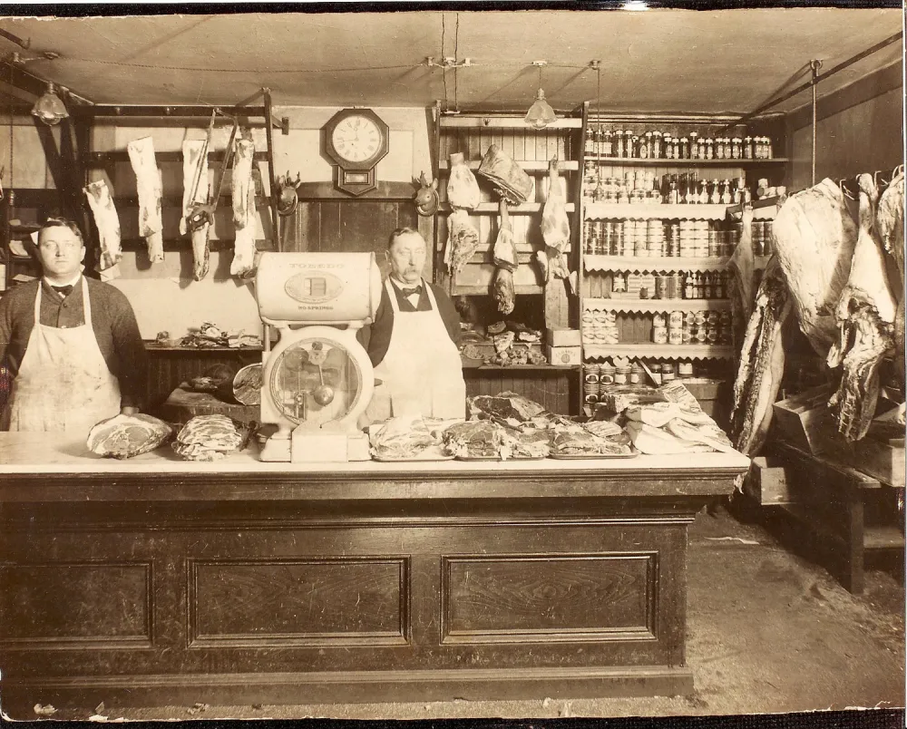

About John's Meat Market
 History Of John's Meat Market
John's meat market started humbly in John's old garage way back in the 1920's. John's family had a farm, and John would butcher the cows, and pigs, and sell it around their neighborhood.
Uncle John is what they used to call him back then. Uncle John's cutlery set was made by a ronin samurai in japan. The reason why John's meat is the best, is because the way John would cut the meat up with his katana.
Uncle John's katana was so sharp, that it will penetrate the meat like its butter cutting through the muscle undisruptive. This preserved the muscle of the meat to its finest stage.
To this day, this katana is still as sharp as it was back in the 1920's, and even though Uncle John had already passed, his family continues on his legacy of finely cutting meat with his katana.